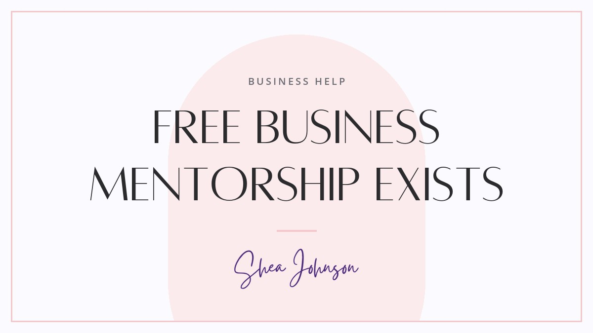

One of my favorite resources to share with my business owners is a nonprofit called SCORE…
But things have changed drastically over there as of October 2025.
They’re still in the transition phase (it’s only been less than 60 days since the major changes).
So I want to share the backstory of how I discovered them.
And how you can continue to use a resource like this moving forward.
Here’s the thing…
I just love them.
I didn’t know they existed or did the work they do.
SCORE offers FREE one-on-one mentorship to business owners, no matter what part of the business journey they are in.
Whether someone is in the idea phase or has been in business for over 20 years, they will work with you.
It’s funny — my first encounter with SCORE was with a gentleman who had been invited to my meeting with the SBA some years ago.
Johnny, the SBA rep, and the gentleman from SCORE (can’t remember his name) gave me feedback on an idea I was pitching in order to get funding.
The second time I heard about SCORE was in a free webinar I attended that was hosted by the SBA.
That’s when I signed up.
And it was not smooth sailing at first.
The first mentor I got — we met once and never met again.
But was our first meeting helpful?
Yes.
Was the guy patient and supportive?
Yes.
Did he answer all of my questions?
Yes (and for what he didn’t know, he said he would get back to me).
What happened was…
I stepped away from SCORE as my entrepreneurship journey went up and down for me… like a roller coaster.
When I returned to SCORE…
I was paired with a mentor again.
And because I was in a different place, a better place — more serious and more motivated — my SCORE mentor could feel that.
And we had lots of momentum and fun with me finally picking back up and moving the business along again.
Since working with SCORE again…
I’ve attended so many of their FREE workshops online, and I’ve attended a workshop in person, too.
As I said, they’ve been one of my secret weapons as a resource, and I love sharing who they are with other entrepreneurs.
I even worked with several of SCORE’s mentors, and then I started teaching there as a volunteer! 🤯😉
But then October 2025 happened.
SCORE made drastic changes.
I’m not sure what they have completely done away with since they are still in the transition phase.
Here’s what I DO know…
There’s a new organization doing similar work in town.
It’s called Boston Business Mentors.
And their website is BBMentors.org
So here’s how to move forward:
If you’re looking for what SCORE used to offer — that FREE one-on-one mentorship — you can now go to Boston Business Mentors.
They’re doing the same work.
Same level of support.
Same expertise.
I’m sharing this resource because I want you to know that FREE, high-quality business mentorship exists.
You don’t have to figure everything out alone.
Disclosure: For links you click on and make a purchase, I may earn a commission at no extra cost to you. Thank you for supporting my content!
If you need FREE business mentorship:
👉 Visit BBMentors.org — Get the same level of support SCORE used to offer
If you want to learn AI tools for your business:
If you’re ready to implement and need systems:
👉 Check out my workbooks on Etsy— Get the organizational foundation every business needs